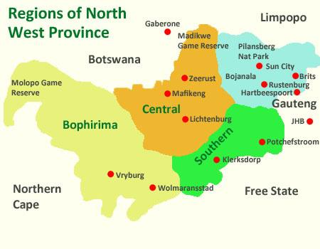
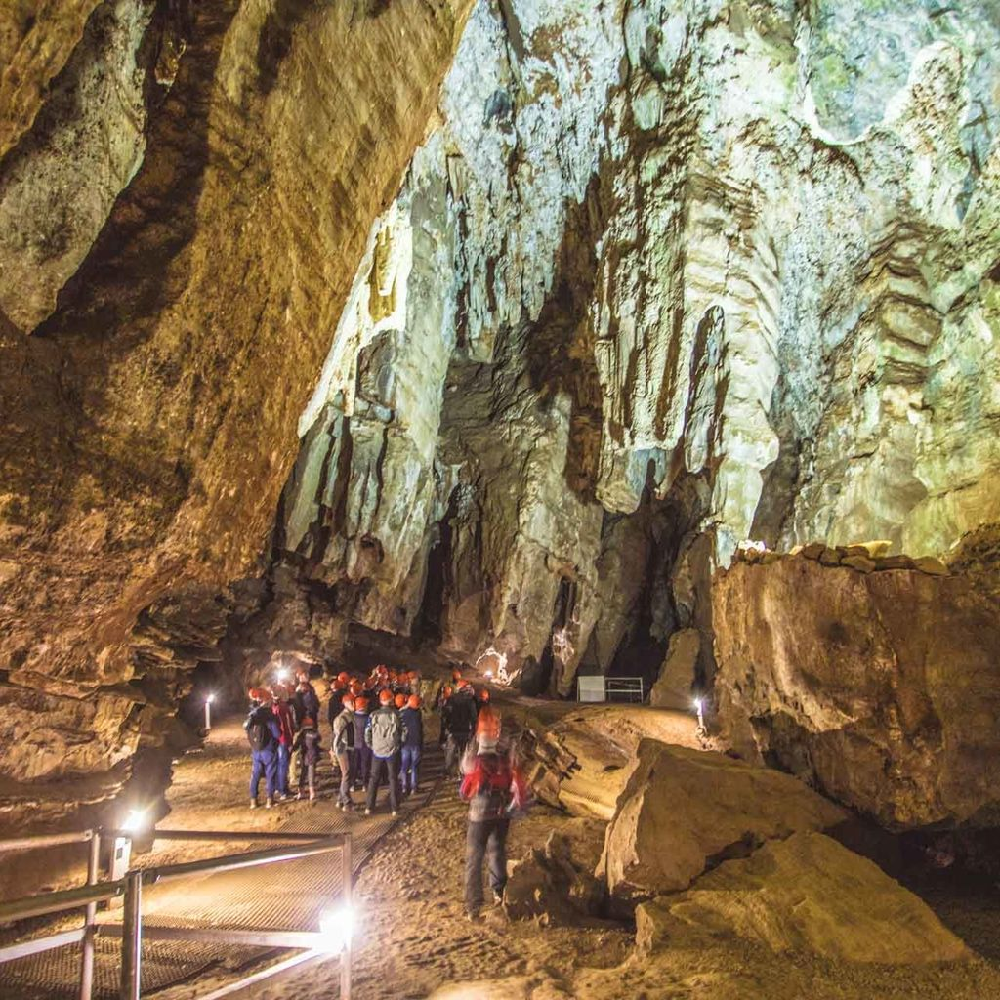
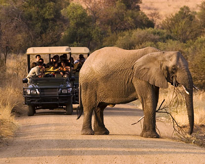
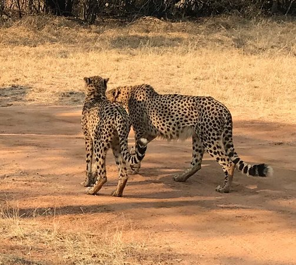
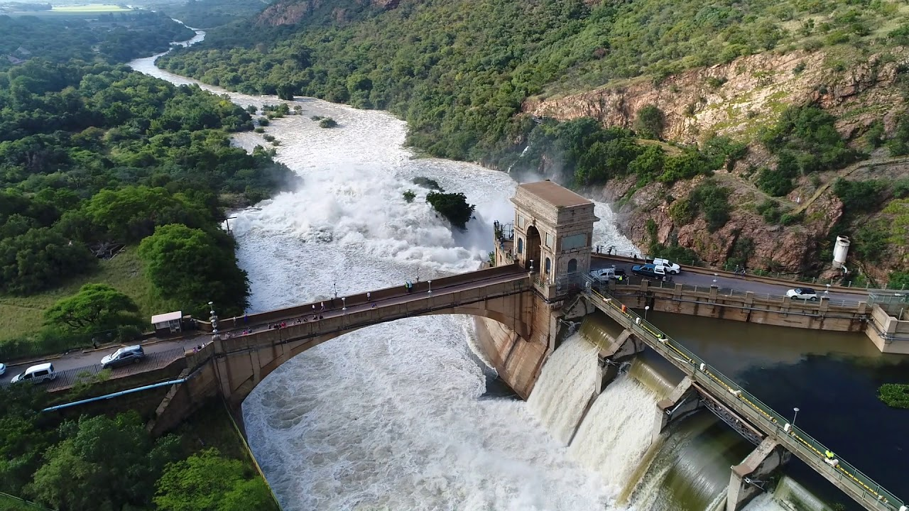
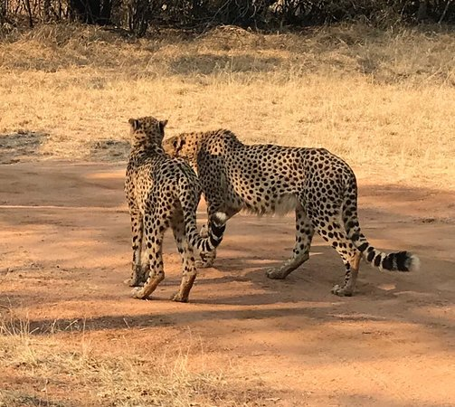
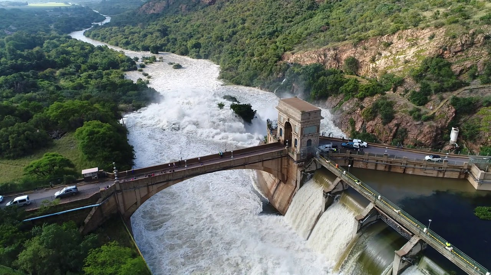

North-West

North West is an inland South African province that borders Botswana. Its landscape is defined by mountains in the northeast and bushveld scattered with trees and shrubs. The province is home to Sun City, an upscale resort with hotels, a casino, and a water park with a massive wave pool. Nearby is Pilanesberg National Park, with an extinct volcano and more than 7,000 animals, including lions and elephants.
Southeast of the park is the aerial Harties Cableway, offering panoramic views of the mountains and Hartbeespoort dam. To the northwest is Madikwe Game Reserve, home to the Big Five (lion, leopard, buffalo, elephant and rhino) and several luxury lodges. The Vredefort Dome, which extends into the Free State, is a mark created by an ancient meteor impact. The surrounding area hosts hot-air ballooning, white-water rafting and hiking excursions. At the Taung Heritage Site, visitors can tour the limestone quarry where a famous hominid skull was found in 1924 and picnic next to a spring at the Blue Pools.


 



Click here for more info on the North-West Province